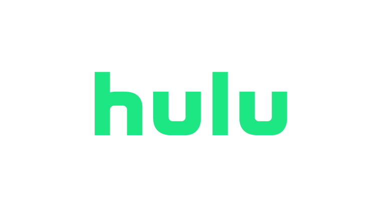
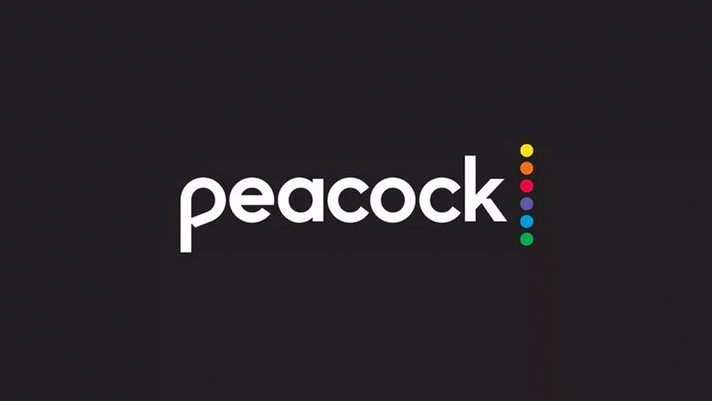
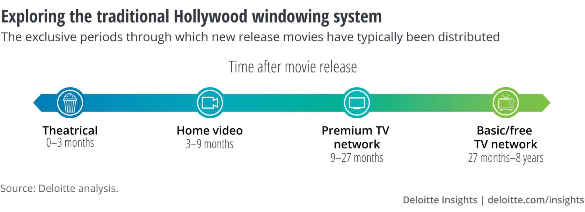
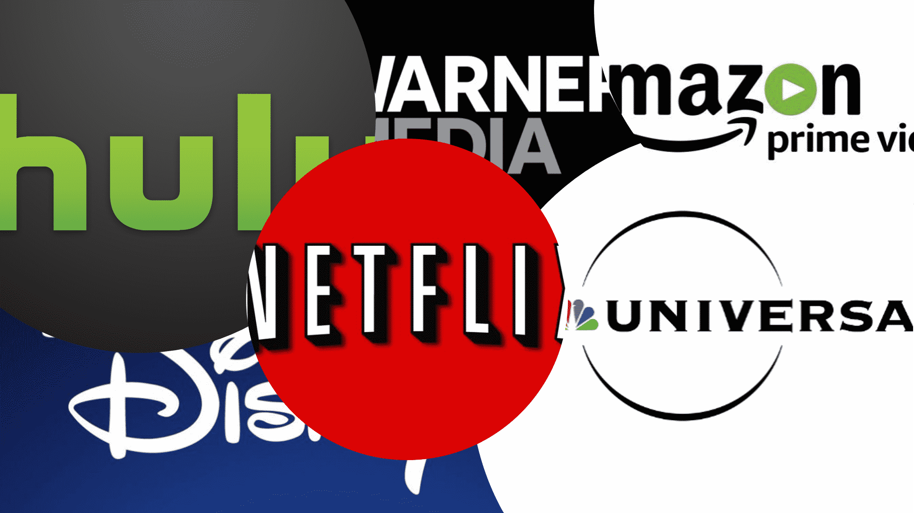

What is a Disruptive Technology?
According to Christensen (2014), disruptive technology, also known as disruptive innovation, is an innovation that contributes to creating a new market and value network. Eventually, this innovation will disrupt the current and existing market and value network. Moreover, Smith (2020) stated that disruptive technology drastically transforms how customers, industries, or businesses work. It is a system that sweeps away old technical habits and design because it offers distinguishably superior characteristics.
There are two types of disruptive technology – new-market disruptions and low-end disruptions. New-market disruptive products are inventions made affordable to own and easier to use, allowing a whole new group of individuals to start owning and utilizing the product (Christensen, 2014). The first users of this disruptive technology are new customers who have never purchased or used the previous generation of products and services. The personal computer and Sony’s first battery-powered transistor pocket radio are two examples of new-market disruptors.
On the other hand, low-end disruptive products are inventions that take root at the bottom of the original or mainstream value network (Christensen, 2014). This disruptive technology does not generate new markets; instead, it is a low-cost business model that expands by taking out the least appealing customers of established enterprises. Steel minimills, discount retailing, and the Korean automaker’s entry into the North American market are all examples of low-end disruptors.
Although the meaning of the term ‘disruptive’ may appear negative, this form of innovation plays a significant role in the world’s technological development. Disruptive technology has the capability to be a tremendously positive force in the world. Its products have demonstrated that disruptive principles can be useful in various domains involving healthcare, education, and economic growth (Clayton Christensen Institute, n.d.).
What are Streaming Services?
Streaming platforms and services are universal and globally on-demand. To understand streaming platforms, one must first comprehend “streaming.” Streaming is widely known as the delivery of any media content to devices such as computers and mobile devices through the internet in real-time playback. Movies, podcasts, TV shows, and music are some of the most popular content for streaming. As Cloudflare defines it, “Streaming is the continuous transmission of audio or video files from a server to a client” (n.d.). In simpler terms, the consumption of media on internet-connected devices is called streaming. The main component of streaming in media consumption is the use of the internet to transmit data. Streaming works by the transmission of prearranged media files in organized data packets. This file disemmination leads to the instantaneous stream of media files. However, streaming requires a reliable and fast internet connection to run it smoothly (Verizon, n.d.).
Numerous digital platforms and applications currently provide streaming services due to popular demand. By definition, a streaming service is a highly on-demand form of online entertainment. As previously mentioned, one can view it as a source for TV shows, movies, and other media. Popular streaming services are Hulu, Netflix, Vimeo, and others (ENDAVO, n.d.).
The statistics for the video streaming market is expected to have a hyper-growth in the future because of increasing internet users. The industry, as mentioned earlier, is expected to hit $149.34 billion by 2026 compared (AlliedMarketResearch, n.d.).
Examples of Streaming Services
Here are some well-known examples of streaming services:

Netflix
Netflix contains a wide range of originals, movies, and series libraries. It currently leads the industry in video quality, partnered with an impressive user-friendly interface.

Hulu
Hulu is popular for being one of the most affordable streaming services with mixed content and various plans. It is known for its on-demand library and live TV option available for subscription.

Amazon Prime Video
Amazon Prime Videois a competitive streaming service with rental and purchase options. This paid subscription program includes a wide variety of international titles.

DisneyPlus
DisneyPlus is considered the best streaming service for families and avid fans of blockbuster hits such as Star Wars and Marvel. DisneyPlus includes its new content mixed with its vault of classics.

Peacock
It is a free streaming service known for its good collection of trending TV shows and movies.
Crunchyroll
A streaming service with a range of anime shows dedicated to anime lovers.
Viu
Viu is said to be “a leading pan-regional over-the-top (OTT) video streaming service.” This streaming service is available in 16 countries.
Sling
Sling is famous for its live TV channels and bundles.
HBO Max
This streaming service contains the full catalog of HBO, including people’s favorites.
ESPN Plus
A well-known streaming service for sports fans, especially for viewers who enjoy UFC, NHL, and MLS.
How Do Streaming Services Work?
When an Internet user views a text, image, or any media on the Web, the content gets requested from a server where files and data are stored before it loads on the user's computer screen. Streaming services use a network of these servers called Content Delivery Network (CDN), whose data centers, where the servers are stored, are located in different parts of the world (“Media Streaming,” 2021; Mercer, 2016; Niccolai, 2014).

The goal of using CDNs is to speed up the content’s loading process on the users’ end. Because distance affects the delivery and, thus, the quality of the content, using CDNs enables streaming services to store cache in different data centers instead of one and to transmit video data from the closest server to the user’s network/device via the Internet (“What Is a CDN?,” 2020). That data is transmitted as a unit of data called data packets and gets stored in a buffer and processed by the streaming service’s application on the user’s computer or TV (Latto, 2021).
How users can have access to these contents will depend on what streaming services they will use. There are streaming services that are free to use or offer premium plans. Free streaming services are free of charge but are ad-supported. A streaming service that uses an ad-supported VOD distribution model may allow its users to upgrade to a premium plan which removes the ads; whereas, a streaming service that uses a subscription VOD distribution model charges its users a fee to exclusively access their content (“OTT Business Models,” n.d.).
Current Market
One of the conveniences that streaming services provide is their attainability - there is no need for consumers to venture outside. With people staying indoors during the pandemic, the streaming service industry has been flourishing ever since. There are three implications of this paradigm shift: the shift in the distribution pattern of movies and entertainment, its effects on the cinema industry, and lastly, the implication to consumers behavior.
Over the past years, millions of people have embraced digital streaming services. Today, six video streaming companies have more than 90 million subscribers and about 11 other companies with at least 8 million subscribers. The biggest of them includes Netflix and Amazon Prime Video, with more than 204 million and 150 million subscribers, respectively. Disney+ was only launched in November 2019, and the company predicted that it would have more than 85 million subscribers by 2024. Today, it already has 95 million subscribers. The massive growth of subscribers for digital streaming companies can be attributed to the unexpected Covid-19 pandemic (Wallach, 2021).
Streaming companies have changed the way people watch television nowadays. According to Nielsen, a market research firm, the average viewing time of people on streaming videos increased by about 75% from 2019 to 2020. In the UK, the average daily viewing time of adults in watching movies or television series from streaming companies is about 5 hours and 40 minutes. It is higher by 47 minutes before the pandemic time. In addition, 80% of the households in the UK are connected to the internet (Wakefield, 2021). In the United States, 26% of the time spent on watching television is accounted for by video streaming companies such as Netflix, Amazon Prime Video, and Disney+ (Bursztynsky, 2021).
The increase in the number of subscriptions for the video streaming companies and the increased viewing time of consumers in streaming services can be attributed to the convenience it brought to the consumers. In the past, people had to buy DVDs or VCD so that they could watch their preferred movie anytime. In this case, consumers are concerned with ownership. Today, people can subscribe to their preferred video streaming company and watch any movie or video anytime. They can also access or watch their preferred video anywhere since it is accessible on mobile devices. The video consumption of people is more personal and safe. They would not need to go out to watch their favorite shows or movies.
In retrospect, streaming services disrupt traditional media distribution, particularly the field of the movie industry. Initially, movie producers would distribute their creations to several movie theaters for consumers. The consumers are used to going to movie theaters, paying ticket admissions, and watching movies. However, in the case of streaming services, consumers can get direct access to a movie or show by subscribing to a streaming service and paying monthly fees. Because production companies are beginning to partner with various streaming platforms to get their work directly to viewers, this process puts the cinema and movie theater sector in peril.
According to Arkenberg et al., movie studios rely on a movie's box office success in theaters before negotiating distribution fees with streaming platforms; the higher the gross, the higher the bid streaming platforms would offer (2020). Furthermore, they stated that production companies receive 45% on average revenue for theatrical releases; cinema distribution is the primary profit-generating viewing option for movies. The image below is the traditional duration and process of movie distribution from Deloitte Insights.
Illustration 1. The traditional Hollywood windowing system.

It can be seen from the illustration that theater viewing lasts for a couple of months before a movie can be on streaming platforms; this method ensures that they are exclusively for cinemas distribution. However, this was the pre-pandemic situation.
Recently, there is also a considerable shift within movie distribution and their streaming service tie-ups. Production companies are starting to take control of their distribution rights by directly handling their content through creating their streaming service platforms. For example, the Disney company released their streaming service Disney+, where they exclusively stream their productions and mainly focus on improving their streaming services (Whitten, 2020). The new strategy disrupts the clearinghouse method Netflix utilizes (Berkeley Economic Review, 2019). However, Netflix's answer to several movie production companies pulling out content from their platform is to produce original works to enhance their library catalog. From cinema theaters acting between producers and consumers, streaming services disrupt this pattern and the market. The way streaming services impact both the market and the consumers' behavior exemplifies why it is a disruptive technology.

References
Arkenberg, C., Cutbill, D., Loucks, J., & Westcott, K. (2020, December 10). Digital media trends | The future of movies. Deloitte Insights. Retrieved November 24, 2021, from https://www2.deloitte.com/us/en/insights/industry/technology/future-of-the-movie-industry.html.
Berkeley Economic Review. (2019, October 21). The Economics Driving the Streaming Industry. Berkeley Economic Review. Retrieved November 24, 2021, from https://econreview.berkeley.edu/the-economics-driving-the-streaming-industry/.
Best streaming service of 2021: Netflix, Disney Plus, HBO Max, Hulu, ESPN Plus and more. CNET. (n.d.). Retrieved from https://www.cnet.com/tech/services-and-software/best-streaming-service-of-2021-netflix-disney-plus-hbo-max-hulu-espn-plus-and-more/.
Bursztynsky, J. (2021). About one-quarter of U.S. TV time is spent watching streaming services, says Nielsen. CNBC. Retrieved from https://www.cnbc.com/2021/06/17/nielsen-streaming-makes-up-only-26percent-of-time-spent-in-front-of-tv.html.
Christensen, C. M. (2014). Disruptive innovation. In The Encyclopedia of Human-Computer Interaction, 2nd Ed. Interaction Design Foundation. https://www.interaction-design.org/literature/book/the-encyclopedia-of-human-computer-interaction-2nd-ed/disruptive-innovation
Clayton Christensen Institute. (n.d.). Disruptive innovation. Christensen Institute. Retrieved November 30, 2021, from https://www.christenseninstitute.org/disruptive-innovations/
Latto, N. (2021, September 24). What Is Streaming & How Does it Work? AVG. Retrieved December 7, 2021, from https://www.avg.com/en/signal/what-is-streaming
Media streaming is now part of our lives, but how does video streaming work? (2021, May 24). CDNetworks. Retrieved December 7, 2021, from https://www.cdnetworks.com/media-delivery-blog/what-is-video-streaming-and-how-does-it-work/
Mercer, E. (2016, October 26). What is an internet data center server & how does it work? Chron. Retrieved December 7, 2021, from https://smallbusiness.chron.com/internet-data-center-server-work-60422.html
Niccolai, J. (2014, May 22). Behind the curtain: How netflix streams movies to your TV. TechHive. Retrieved December 7, 2021, from https://www.techhive.com/article/2158040/how-netflix-streams-movies-to-your-tv.html
OTT Business Models: A Full Breakdown on Making Revenue in OTT. (n.d.). MAZ & Zype. Retrieved December 7, 2021, from https://www.mazsystems.com/en/blog/types-of-ott-business-models
Ravenscraft E, & Barrett B. (2021). 9 Free Streaming Services to Save You From Subscription Hell. Wired. Retrieved from https://www.wired.com/story/free-streaming-services/.
Smith, T. (2020, March 21). Disruptive technology definition. Investopedia; Dotdash. Retrieved from https://www.investopedia.com/terms/d/disruptive-technology.asp.
Streaming. Verizon. (n.d.). Retrieved from https://www.verizon.com/info/definitions/streaming/.
Video Streaming Market Insights. Allied Market Research. (n.d.). Retrieved from https://www.alliedmarketresearch.com/video-streaming-market.
Wakefield, J. (2021). Nearly a third of waking hours spent on TV and streaming, Ofcom says. BBC News. Retrieved from https://www.bbc.com/news/technology-58086629.
Wallach, O. (2021). Which Streaming Service Has the Most Subscriptions? Visual Capitalist. https://www.visualcapitalist.com/which-streaming-service-has-the-most-subscriptions/.
Webb. (2021). The best streaming services you can sign up for in 2021. Business Insider. Retrieved from https:/www.businessinsider.com/best-streaming-service
What are streaming platforms? ENDAVO. (n.d.). Retrieved from https://www.endavomedia.com/streaming-platforms-a-complete-guide/
What is a CDN? How does a CDN work? Imperva. (2020, March 23). Retrieved December 7, 2021, from https://www.imperva.com/learn/performance/what-is-cdn-how-it-works/
What is streaming? Cloudflare. (n.d.). Retrieved from https://www.cloudflare.com/learning/video/what-is-streaming/.
Whitten, S. (2020, October 12). TECH Disney says its ‘primary focus’ for entertainment is streaming — announces a major reorg. CNBC. Retrieved from https://www.cnbc.com/2020/10/12/disney-reorganizes-to-focus-on-streaming-direct-to-consumer.html